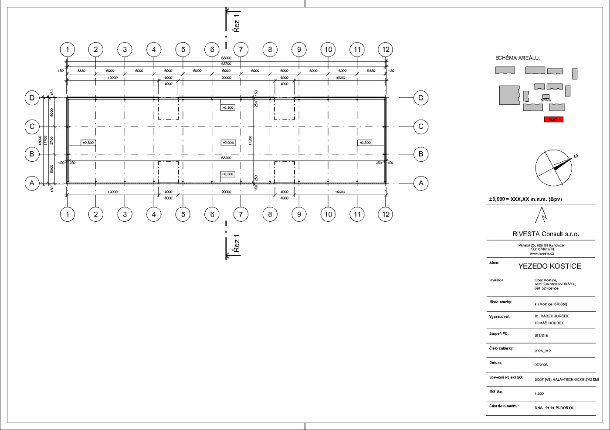
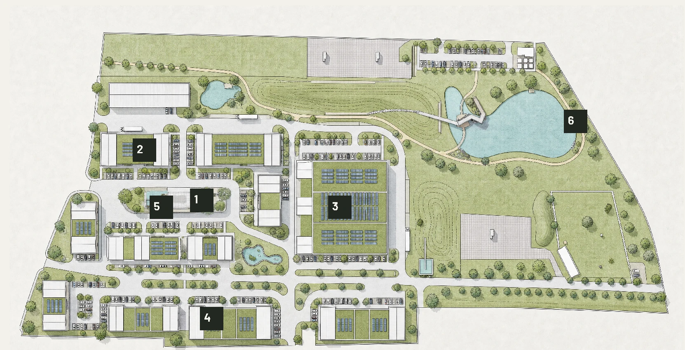

Haly SO07
Připravovaná halaHala + technické zázemí
HALA SO07
- Rozměry
- 66 × 18 m
- Zastavěná plocha
- 1 188 m²
- Sekce
- 2
- Odhad nákladů stavby
- 26,1 mil. Kč

Dvě sekce po 33 m s technickým zázemím areálu.
Modulární hala v měřítku původního zemědělského družstva. Vnitřní prostor lze libovolně dělit, součástí může být kancelářské patro, administrativní vestavby i showroom. Reprezentativní fasáda a vstup směřují do sdíleného veřejného prostoru.
- Dispozice na míruKonstrukční systém i vnitřní dispozici lze přizpůsobit charakteru provozu.
- Kanceláře ve 2. NPSoučástí řešení může být druhé podlaží pro kanceláře a zázemí.
- Hotová infrastrukturaKomunikace, vodovod, kanalizace, osvětlení a rozvody NN jsou zkolaudované (2026).
- Společná správaZeleň, komunikace a parkoviště spravuje YEZEDO Services za měsíční servisní poplatek.
Poloha v areálu
KDE HALA SO07 STOJÍ.

Klikněte na jinou halu pro její detail. Návrhová situace: Zásady rozvoje Smartzóny YEZEDO Kostice, 07/2026.
MÁTE ZÁJEM
O HALU SO07?
Napište nám, jaký provoz plánujete. Projdeme s vámi dispozici, technické návaznosti i obchodní model.
Mám zájem o SO07
Libor Balga, starosta obce Kostice
+420 725 111 277 · starosta@kostice.cz